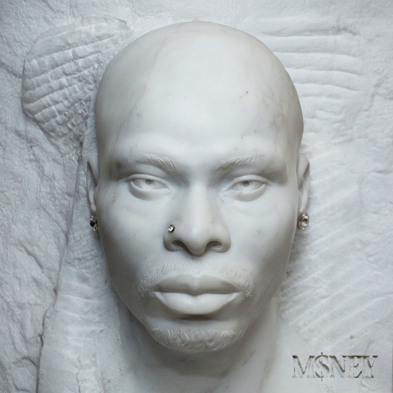
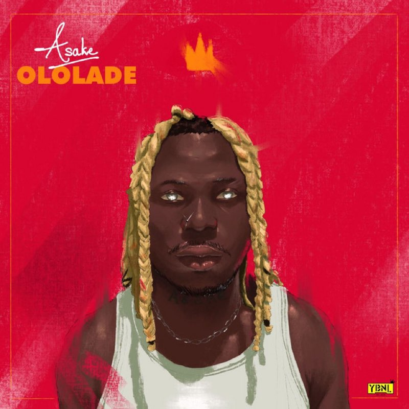
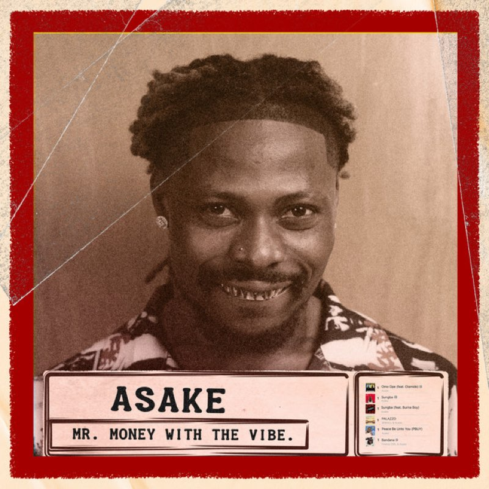
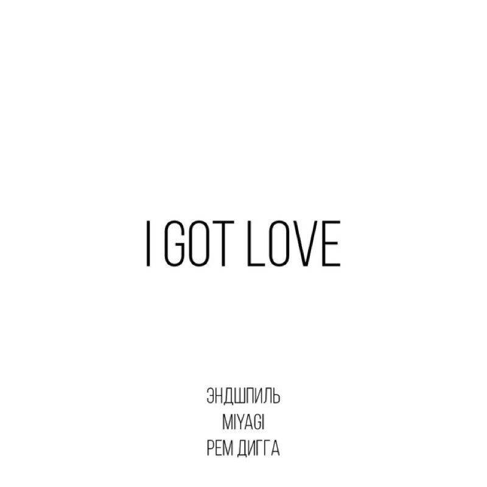
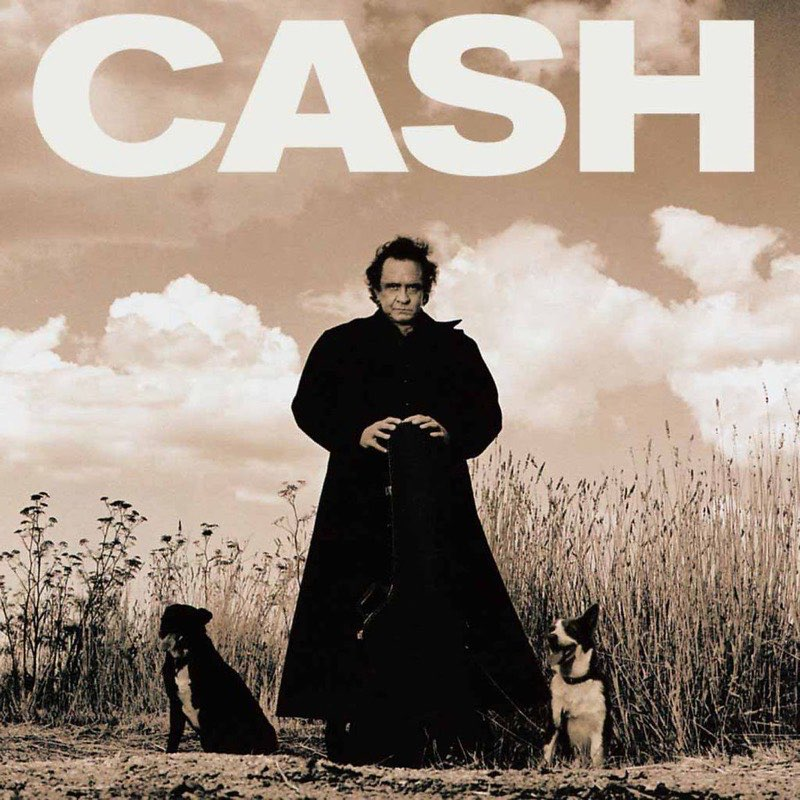

ARTISTS
The whole roster.
Children's music, Italian Pop, Afrobeats,hip-hop and country. Every
artist on
the label, with their five most streamed songs and how long each one
runs.
Pinkfong
Adriano Celentano
Asake
Miyagi and Andy Panda
Johnny Cash

CHILDREN'S MUSIC
Pinkfong
5 TOTAL SONGS 11:31 TOTAL RUNTIME
The children's music powerhouse behind the most-watched video on the
internet. Short,
loud, unbelievably sticky!
01 Baby Shark
2:16
02 Wheels on the Bus
2:35
03 Five Little Monkeys
2:05
04 Monkey Banana
2:24
05 Shark Family
2:11

ITALIAN POP
Adriano Celentano
5 TOTAL SONGS 20:52 TOTAL RUNTIME
Sixty years of Italian pop in one voice: rock and roll imported,
rewritten and sung back
louder.
01 Azzurro
3:41
02 L'emozione non ha voce
4:13
03 Il ragazzo della via Gluck
4:16
04 Susanna
4:26
05 Confessa
2:35

AFROBEATS
Asake
5 TOTAL SONGS 14:08 TOTAL RUNTIME
Amapiano log drums, fuji chants and street-Yoruba hooks. The loudest
new voice out of
Lagos

01 Sungba | 2:47

02 Joha
2:35

03 Jogodo
3:08

04Amapiano
3:22
05 Lonely At The Top
2:16

HIP HOP
Miyagi and Andy Panda
5 TOTAL SONGS 16:21 TOTAL RUNTIME
Two rappers from Vladikavkaz, half sung and half spoken, built on
dub basslines and long
reverbs.

01 Kosandra
3:18

02 Utopia
3:00
03 Minor
3:13

04 Saloon
2:46

05 I Got Love
4:04

COUNTRY
Johnny Cash
5 TOTAL SONGS 15:40 TOTAL RUNTIME
The man in black. Three chords, the truth, and a baritone that
outlasted every genre it was
filed under.
01 Hurt
3:36
02 Ring of Fire
2:38
03 Highwayman
3:03
04 God's Gonna Cut You Down
2:38
05 Ghost Riders in the Sky
3:45
NEWSLETTER
Hear it before the algorithm does.
One mail a month: new releases, tour dates and the odd
unreleased demo. Tell us what you listen to and we will keep the
rest of your inbox.